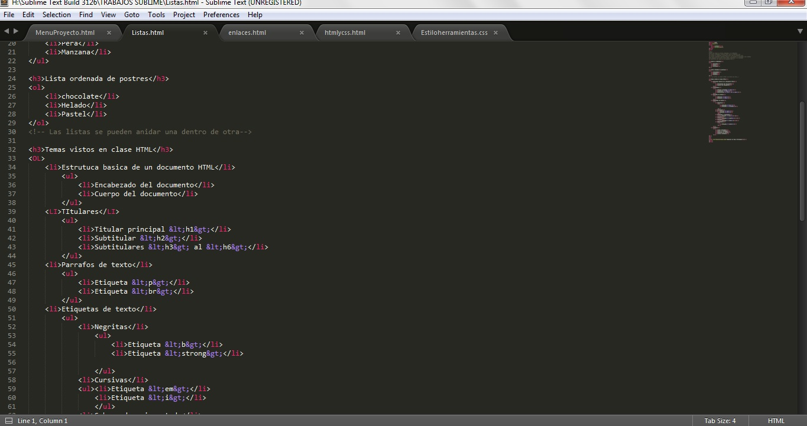

Este trabajo nos ayuda a la creacion de paginas web con codigo HTML y para darle estilso usamos el codigo CSS, es una herramienta que debemos tomar mucho en cuenta para futuros proyectos que querramos hacer dentro de la facultad
Caracterizticas del trabajo
- El programa Sublime Text es muy fluido y eficaz
- comando de control simples
- Ayuda para indentificar mejor los codigos
